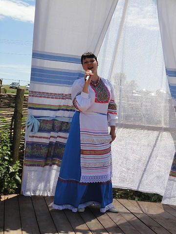

Ирина Бруханчик
Исполнитель народной песни. Станица Днепровская. Тимашевский район. Кубань

Уже более ста лет стоит на бескрайних просторах живописного Краснодарского края, неподалёку от г.Тимашевска
, казачья станица Днепровская. В далёком 1886г. пришли сюда с Днепра запорожские казаки
и поселились здесь. Отсюда и пошло название станицы.
С тех пор и по сей день славятся эти места
и своей плодородной землёй и талантливымы людьми. В этих местах жила знаменитая мать-героиня Епистиния Федоровна
Степанова
, подарившая своей земле пятнадцать детей и отдавшая семерых сыновей,
которые пали в боях за Родину.
И в 20-е годы разрухи , и в годы Великой Отечественной войны, и в
послевоенное время вплоть до наших дней, Днепровцы вносили свой весомый вклад в умножение богатства
нашей страны и её культуру.Любят и умеют кубанцы работать. Любят и умеют отдыхать.
Особое место
в этих краях
отводится народной песне. Щедра Кубанская земля на исполнителей.
Одна из них Ирина
Бруханчик.